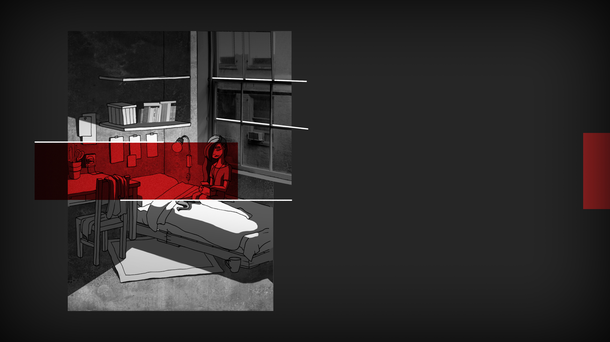

SPLITTED
SPLITTED

I open the package and what I find inside is remarkably strange. It's definitely an old device, something that was used probably in the early years of Aether, or even before the great migration. It's a rounded thick box, covered in hard silver plastic: it looks like a big stater, and fits in one hand perfectly. On one side there are three buttons, a camera lens and a microphone hole.